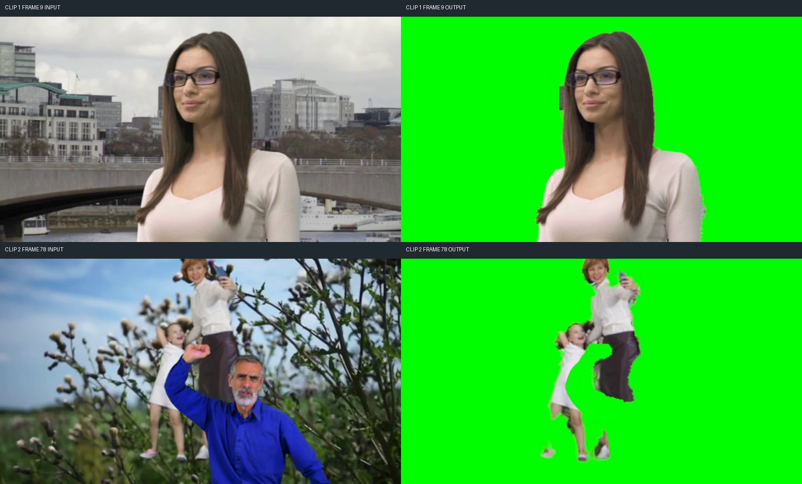
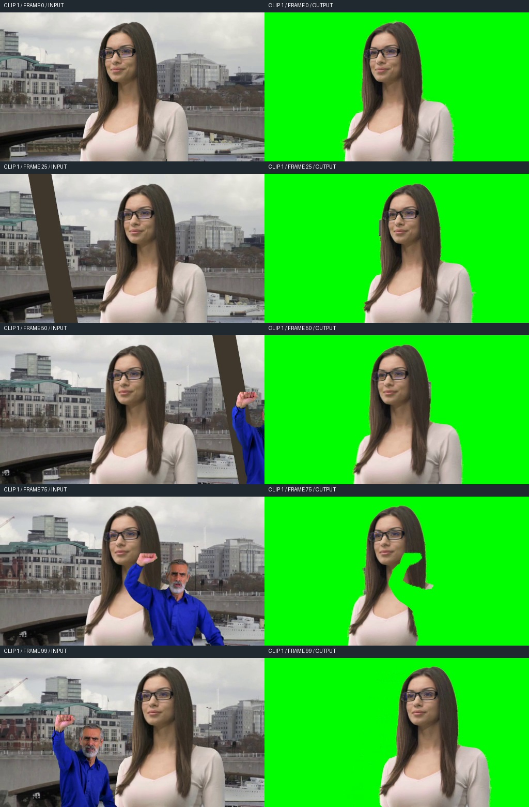
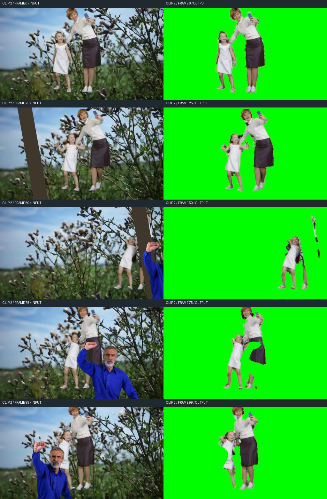

原生 API 已跑通，画面质量单独计分
2026-11-03 · gpt-6.1-sol · high · 独立作答 94.1 分钟（上限 120 分钟）
运行轨迹与计分决定
轨迹按真实完成事件排序，包含命令、输出、退出状态与原生 API 操作统计；不包含凭据、原始模型 API 请求或内部推理。旧试次因基础设施上传超时终止，本轮重新开始；运行中超时与重复执行保护修正保留在公开 JSON 的 experiment_environment 中。
分怎么扣
两段各抽取 5 个固定隐藏样本。每个样本先过“输入相似度”和三项视觉清单门槛，再计算 30% 全画面边缘 IoU + 70% 目标区域边缘 IoU；两段等权，总分 100。
本次正式质量失分 49.0706。下面三项互斥归因，不把同一失败同时按门槛和边缘重复扣分。全片语义审查用于协议合规，不额外改变这项质量分。
边缘分低表示轮廓与参考不一致，不能单凭此分数判断是缺胳膊、漏背景还是发丝质量；具体问题以输入/输出对比和逐帧复核证据为准。
关键错误 · 可直接回看
- 片段 1：0.20–0.36 秒，脸旁保留了灰色矩形残留；独立裁判将其列为竖状干扰残留。
- 片段 2：3.04–3.16 秒，孩子原本可见的小腿被误删，鞋部与腿部断开。这已超过普通发丝软边误差。
两段的全部计分样本均通过基础门槛。本轮数值失分来自边缘 IoU；下列全片语义问题另行记录，不从正式质量分中重复扣分。

片段 1 · 31.7242 / 50
展开公开时刻的输入/输出帧对比

| 失分来源 | 扣分 | 计算与边界 |
|---|---|---|
| 采样帧未过门槛 | −0.0000 | 任一门槛不通过，该帧贡献为 0；每帧最多 10 分。 |
| 全画面边缘不匹配 | −5.4827 | 通过门槛的每帧：3 × (1 − 全画面边缘 IoU)。 |
| 目标区域边缘不匹配 | −12.7931 | 通过门槛的每帧：7 × (1 − 目标区域边缘 IoU)。 |
输入相似度门槛 ≥ 0.3：5/5 帧通过，最低 0.8655。视觉清单均值 ≥ 0.5：5/5 帧通过，最低 1.0000。
模型具体做得怎样 · 全片逐帧语义复核
目标人物是否正确：通过
[0,10): 逐行核对000–009帧：输出均保留身份图中的目标女性，眼镜、面部、长直棕发、浅色上衣及肩胸位置与对应输入一致，未见其他人物替代或目标身份切换。发梢及衣袖边缘的小幅误差不构成身份错误。 [10,20): 逐行核对第10、11、12、13、14、15、16、17、18、19帧：输出均保留身份图中的同一名女性，眼镜、面部、长直深色头发、浅色V领上衣及双肩位置均与各帧输入对应，未见其他人物被保留或替换目标。头发与袖口附近的少量边缘残留不构成身份错误。本结论仅覆盖第10—19帧。 [20,30): 逐行核对第20–24帧及第25–29帧：输出均仅保留身份图中的长棕发、深色眼镜、浅色上衣女性。脸部、眼镜、两侧长发、肩部与胸前衣物均与各帧输入对应，未见目标被替换或混入其他人物。发梢及衣袖边缘的少量抠像误差不构成身份错误。 [30,40): 逐行核对第30–39帧：输出保留的均为身份图中的长棕发、深色眼镜、浅色上衣女性。第30–33帧可见的面部、长发和上身与对应输入一致；第34–36帧竖条逐渐遮住脸部及胸前，输出仍保留原片中露出的脸部、头发和衣袖；第37–39帧竖条两侧显露的眼镜、脸部、发束及上身仍对应同一女性。未见混入其他人物或替换身份。 [40,50): 逐帧核对40–49帧，输出均保留身份图中的长棕发、深色眼镜、浅色上衣女性。40–42帧中，脸部、眼镜、可见头发及胸前衣物与各自输入对应；竖条造成的身体分隔未被误判为人物缺失。43–49帧中，女性右侧头发、肩部及袖子随输入显露，未见其他人物替代或目标身份改变。 [50,60): 逐行核对第50–54帧及第55–59帧，输出均仅保留身份图中的长直深色头发、戴眼镜、穿浅色V领上衣的目标女性。各帧的脸部、眼镜、发型、肩部与胸前衣物均对应同帧输入，未见身份替换或其他人物被保留。局部发丝和衣袖边缘的细小残留不构成身份错误。 [60,70): 逐行核对第60–69帧：输出保留的主体均为身份图中的长棕发、戴深色眼镜、穿浅色上衣的女性。第60–64帧及第65–69帧的脸部、眼镜、前侧长发、领口和胸前衣物均与各自输入对应，没有换人或混入男子身体作为女性主体的情况。右侧头发及肩袖轮廓存在局部裁切和边缘不整，不据此判为身份错误。本结论仅覆盖第60–69帧。 [70,80): 逐帧核对70–79帧，输出保留的均为身份图中的长直棕发、深色眼镜、浅色上衣女性。70–72帧的脸部、眼镜、前侧长发和胸前衣物与各帧输入对应；73–76帧及77–79帧，男子遮挡范围扩大，女性仍可见的脸部、头发和衣物保持对应身份。遮挡位置的缺口与局部边缘误差未被当作身份错误，未见另造人物替代。 [80,90): 逐帧核对80–89帧。80–84帧输出保留身份图中女性的深色长发、深框眼镜、面部及未被遮挡的浅色上衣；85–89帧同一女性的面部、头发及肩胸部随原片对应变化。十帧中保留的人物均为目标女性，未见换脸、另造人物或其他人物被当作目标保留。局部轮廓缺口不作为身份错误。 [90,100): 逐行核对第90–99帧，输出均保留身份图中的长直棕发、深色眼镜、浅色V领上衣女性；脸部、眼镜、发型及画面右侧肩臂与各帧输入对应，未见身份切换或其他人物替代。第90–94帧画面左侧头发及胸前轮廓存在裁切，但不构成身份错误。
路人及遮挡物是否排除：未通过
[0,10): 已检查000–009帧，未见输出保留蓝衣男子。但005–009帧中，女性画面左侧太阳穴旁、外侧镜框下方至脸颊旁的一小段灰色矩形竖条仍出现在输出中，与输入对应位置的竖条一致；009帧尤其清楚。该残留有平直的矩形边界，并非普通发丝软边，竖条未被完全排除。 [10,20): 已检查第10—19帧全部输入与输出。第10—15帧未见蓝衣男子或进入画面的前景竖条；第16—19帧输入左缘出现并逐渐增宽的深色斜竖条，在对应输出左侧均被移除，原位置为绿色背景。十帧输出均未见蓝衣男子或该竖条残留。 [20,30): 回看第20–29帧全部十行：输入画面左侧逐渐靠近女性的粗深色竖条均未作为物体保留在输出中；第29帧竖条靠近女性画面左侧发梢及躯干边界处，输出亦未保留该粗竖条。本区间输入与输出均未见蓝衣男子。第20–25帧女性画面左侧太阳穴旁有少量灰色背景残留，其位置对应原片建筑边缘，并非该粗竖条。 [30,40): 逐行核对第30–39帧：输入中的深色斜竖条均未作为前景保留。第30–33帧竖条位于女性左侧并遮住部分头发、肩胸，输出相应位置为绿色；第34–39帧竖条横移经过脸部、长发和躯干，输出中的对应斜带持续为绿色，未见深色竖条残留。这十帧中未见蓝衣男子。 [40,50): 逐帧核对40–49帧，输入中的深色倾斜竖条均未作为条状物保留在输出中。40–42帧竖条穿过女性头部右侧、头发和躯干的位置在输出中呈绿色缺口；43–49帧竖条继续向画面右侧移动，输出未保留该条。45–49帧输入右缘出现的蓝衣男子袖子和抬起的手，在对应输出中均被排除。发缘及肩后局部小块边缘残留未呈现可辨认的竖条或蓝衣男子部位。 [50,60): 已核对第50–59帧全部输入与输出。第50–54帧输入右侧蓝衣男子逐步显露的手、蓝色袖子、头脸及躯干，以及其上方的深色竖条，均未出现在对应输出中；第55–59帧输入右侧男子的举起手臂、头脸和蓝衣躯干亦均被排除。输出女性发缘旁偶有小块背景残留，但未见可对应蓝衣男子或深色竖条的残留。 [60,70): 逐行检查第60、61、62、63、64、65、66、67、68、69帧，输入中女性右后方蓝衣男子的灰发头部、面部、蓝色躯干、抬起的手掌及手臂，在相应输出中均未见保留。第66–68帧女性右肩附近的浅色孤立小片，对应输入中露在男子蓝色手臂上方的女性浅色衣料，不是男子手掌或蓝袖残留。判断仅针对本区间实际出现的蓝衣男子。 [70,80): 已检查70、71、72、73、74、75、76、77、78、79帧。输入中蓝衣男子的灰发头部、脸、举起的拳头、弯曲手臂、蓝色躯干及另一侧手臂在对应输出中均被排除。70–72帧女性右侧的男子区域为绿色；73–79帧横跨女性头发、颈部和胸前的男子手臂与躯干也为绿色，未见可辨认的男子残留。 [80,90): 逐帧核对80–89帧。80–82帧蓝衣男子的脸、灰发、胡须、蓝色躯干以及举至女性嘴边的手和弯曲手臂，在输出中均被绿色替代；83–85帧男子头部、横过女性胸前的手臂及躯干继续被排除；86–89帧男子向画面左侧移动并抬高的手、前臂、头部和蓝衣身体也均未保留。十帧未见可辨认的男子身体或蓝衣残留。 [90,100): 逐行核对第90–99帧，输入中位于女性画面左前方的蓝衣男子，其举起的手掌、手臂、灰发面部及蓝色躯干均未出现在输出中。第90–94帧男子与女性重叠处呈绿色缺口，第95–99帧男子逐渐向画面左侧移动，输出仍未保留其身体部位。
是否仅保留真实可见部分：通过
[0,10): 逐行对照000–009帧：输出中女性的脸部、眼镜、头发、领口、肩部及躯干显露范围均随对应输入变化，画面下缘的身体截断也保持对应；未见补出画外身体或遮挡后的部位。005–009帧太阳穴旁竖条仍留在对应位置，未见在其遮挡处另补头发或面部；各帧人物细微位置变化与输入对应，未见用固定静帧或另造人物替代。 [10,20): 逐帧对照第10—19帧，女性可见的头顶、眼镜与面部、两侧长发、颈部、领口、肩部及画面下缘截断的躯干均与对应输入一致；人物横向位置和发梢、衣服轮廓的细微变化也随对应帧变化，未见以固定人物截图替代。第16—19帧左侧竖条尚未遮到女性，输出未因移除竖条而新增人体部分；十帧均未见补画被遮挡身体或另造人物。 [20,30): 逐帧对照第20–24帧、第25–29帧的头顶、脸部、眼镜、长发、领口、双肩及可见躯干，输出的姿态、位置和可见范围均与相应输入对应。第29帧重点核对竖条靠近的画面左侧发梢及下部躯干边界，未见明确补画被挡部位；十帧中未见以静帧或另造人物替代的证据。本结论仅适用于第20–29帧。 [30,40): 逐行对照第30–39帧输入与输出：第30–31帧左肩及胸前的遮挡边界、第32–35帧竖条两侧分离显露的发梢和衣料，均在输出中保持相应可见范围；第36–37帧被遮住的中央脸部、颈胸和头发没有被补齐；第38–39帧左侧重新显露的眼镜、面部和长发随输入出现，右侧仍可见的发束及衣袖也与输入对应。遮挡缺口逐帧移动，未见静帧替代、另造人物或补全被遮挡部位。 [40,50): 逐帧对照40–49帧输入与输出：40–41帧，竖条遮住的头部右缘、右侧头发及躯干区域在输出中保持绿色缺口，条右侧原本可见的袖子单独保留；42帧仍按竖条边界截去被遮挡区域，未补出完整右肩。43–45帧随竖条移开而显露的头发、肩部和袖子与输入对应；46–49帧保留输入中可见的女性轮廓。十帧中的人物位置、发梢与衣物轮廓随对应输入变化，未见遮挡补全、静帧替代或另造人物。 [50,60): 逐帧核对第50–54帧及第55–59帧，输出女性的脸部朝向、头发落点、V领轮廓、肩臂及画面下缘截断位置均随对应输入一致变化。此范围内男子和竖条未遮住目标女性，输出未见额外补造肢体或扩展画外身体；各帧保留输入中可见的目标部分，未发现用静帧或另造人物替代的迹象。结论仅限第50–59帧。 [60,70): 已对照第60–69帧各行输入与输出：女性面部、眼镜、头发和上衣可见部分的位置与各帧输入相符。第60–65帧右肩与右侧发缘随输入遮挡关系裁切；第66–68帧，男子手臂横过女性右肩区域，输出将被遮挡区域留为绿色，并保留上方实际可见的浅色衣料小片；第69帧也未补出被男子遮住的右肩和上臂。十帧内未见另造身体、补全遮挡部分或以不对应当前输入的静帧替换的可见证据。结论不延伸至第60–69帧以外。 [70,80): 逐行对照70–79帧输入与输出：70–72帧，女性画面右侧头发和肩部被男子遮挡的位置保留绿色缺口；73–75帧，举臂穿过头发、颈肩区域，输出相应呈现弯曲缺口，旁侧保留的头发及浅色衣物碎片在输入中可见；76–79帧，拳头逐渐移向下脸部，手臂和躯干覆盖范围随帧变化，输出缺口同步变化，右肩和右侧衣物的可见片段与输入对应。未见补全被遮挡的头发、颈胸或衣物，也未见用静帧或其他人物替代。 [80,90): 逐帧对照80–89帧输入与输出。80–82帧女性嘴边被男子手部遮挡的位置，以及颈胸前被男子头部、手臂和躯干遮挡的位置，在输出中保持绿色缺口；83–85帧缺口随男子头部和手臂位置变化，未补画其后的女性头发、颈部或衣服；86–89帧男子向左移动后，女性右侧长发、颈部及浅色上衣的显露与各帧输入对应，仍被男子遮挡的部位继续留空。十帧中的人物位置及遮挡缺口随输入变化，未见用静帧替代或补全被遮挡身体的情况。 [90,100): 逐行对照第90–99帧输入与输出：第90–94帧男子遮挡女性画面左侧头发、肩胸的位置仍为缺口，未补出被遮住的身体；第95–99帧随男子左移，女性原片中逐渐显露的头发和上衣区域在输出中相应显露。女性头部位置、发梢和衣领的逐帧变化均与对应输入一致，未见静帧或另造人物替代。局部轮廓裁切及画面右侧袖边少量灰色残边不构成遮挡部分补全。
片段 2 · 19.2052 / 50
展开公开时刻的输入/输出帧对比

| 失分来源 | 扣分 | 计算与边界 |
|---|---|---|
| 采样帧未过门槛 | −0.0000 | 任一门槛不通过，该帧贡献为 0；每帧最多 10 分。 |
| 全画面边缘不匹配 | −9.2384 | 通过门槛的每帧：3 × (1 − 全画面边缘 IoU)。 |
| 目标区域边缘不匹配 | −21.5564 | 通过门槛的每帧：7 × (1 − 目标区域边缘 IoU)。 |
输入相似度门槛 ≥ 0.3：5/5 帧通过，最低 0.6469。视觉清单均值 ≥ 0.5：5/5 帧通过，最低 1.0000。
模型具体做得怎样 · 全片逐帧语义复核
目标人物是否正确：未通过
[0,10): 逐帧核对000–009：输出均保留身份图中的成年女性和女孩。成年女性的短发、白色上衣、深色半裙、双腿白鞋及举手机的手臂，与各帧输入对应；女孩的面部、白裙、双腿及粉色鞋均可对应辨认。女孩手臂在000–009中的位置变化也与输入对应，未见人物替换或整名目标丢失。女孩手边及腿侧的局部植物残留不构成身份错误。 [10,20): 逐行核对第10、11、12、13、14、15、16、17、18、19帧：输出均保留身份图中的短发成年女性和白裙女孩。成年女性的面部、白色上衣、深色裙装、双腿及持手机的手臂可对应输入；女孩的面部、白裙、双腿及粉色鞋也可对应输入。两人的倾身姿态和女孩手臂的逐帧变化保持对应，未见人物替换或整个人物遗漏。手臂、裙边和鞋部的局部抠像缺损不据此判为身份错误。 [20,30): 逐行检查第20、21、22、23、24、25、26、27、28、29帧：输出均保留身份图中的短发成年女性和白裙女孩。第20—24帧，女性的面部、白色上衣、深色裙子、双腿及持手机的手均与对应输入一致；女孩的面部、长发、白裙和双腿亦对应。第25—29帧，两人的身份与服饰连续一致，女孩逐渐抬起的双臂和女性持手机的姿态均随输入变化，未见目标人物被替换或整个人遗漏。此结论仅覆盖所供十帧。 [30,40): 逐行核对第30—39帧：输出均保留身份图中的短发成年女性及白裙女孩。成年女性的面部、白色上衣、深色半裙、持手机的手臂，以及女孩的面部、白裙和举起的双臂均与同帧输入对应。第34—39帧女孩靠近竖条一侧的下肢逐渐被遮挡，但仍保留其实际可见部分；未将这种遮挡导致的不完整判作身份丢失。十帧内未见人物身份替换。 [40,50): 逐行核对帧40、41、42、43、44、45、46、47、48、49的输入与输出，并与身份图比对。帧40–43保留持手机、穿白上衣和深色裙子的成年女性，以及其左侧穿白裙的女孩；两人的脸、服装和可见肢体对应原片。帧44–46女孩被竖条遮挡后，输出保留其原片可见的局部头部或手臂、裙摆及腿脚；成年女性仍对应原片。帧47–49成年女性逐渐被竖条遮挡，输出保留其可见的脸部、持手机的手、上衣及裙腿片段；女孩的白裙、腿脚及逐渐露出的头部仍对应原片。未见目标被替换或额外人物被作为目标保留。 [50,60): 逐行核对第50–59帧输入与输出。白裙女童在十帧中均保留，头部、白裙和双腿的位置及姿态与对应输入一致。成年女性在第50帧主要保留遮挡外露出的衣物及腿脚，第51帧头部部分显露，第52–59帧可辨认其短发、面部、白色上衣、持手机的手和深色裙装。两名目标均持续保留；身体因前景遮挡而出现的缺口未作为身份错误。 [60,70): 逐行核对第60、61、62、63、64、65、66、67、68、69帧：输出均保留身份图中的成年女性和白裙女孩。成年女性的短发、面部、白色上衣、持手机的手及深色裙装与各帧输入对应；女孩的面部、白裙及可见双腿、鞋子亦对应。两人的位置与姿态随输入逐帧变化，未见身份替换。前景遮挡处形成的缺口不作为身份错误。 [70,80): 逐行核对第70—79帧，输出中的成年女性和女孩均与身份图对应，两人的脸部、发型及主要衣着可辨认。但两目标的保留存在明显缺损：第76—79帧，女孩画面左侧腿部在输入中可见，输出却删除了较大段小腿，留下与腿部断开的鞋部残片；第78—79帧尤其明显。这属于目标身体区域缺失，超出普通软边误差。 [80,90): 逐行核对第80、81、82、83、84、85、86、87、88、89帧：输出均保留身份图中的成年女性和女孩。成年女性的短发、面部、白色上衣、持手机的手及可见深色裙部与对应输入一致；女孩的面部、发型、白裙及未被遮挡的手臂、腿脚与对应输入一致。两人的局部身体随前景遮挡而呈断开形状，未据此判为身份错误；这十帧未见目标被其他人物替换。 [90,100): 逐行核对第90–99帧，两名目标均与身份图对应：成年女性的短发、面部、白色上衣、持手机的手及深色裙装持续保留；女孩的面部、抬起的手臂及原片中可见的白裙部分持续保留。第90–95帧女孩下身及女性裙腿的缺口与前景男子遮挡位置对应；第96–99帧女孩逐渐显露的裙摆、腿部也随原片变化出现。未见目标被替换为其他人物，未将遮挡缺口或普通边缘误差认定为身份错误。
路人及遮挡物是否排除：通过
[0,10): 逐帧检查000–009的输入和输出：本区间输入未出现可辨认的蓝衣男子或独立竖条干扰物，输出中亦未见这些干扰对象；两名目标周围主要为绿色背景。001–004女孩画面左侧手边及双腿附近可见少量不规则植物残留，其形态可与输入植物对应，并非所指竖条。本结论仅覆盖000–009。 [10,20): 检查第10—19帧全部输出，均未见竖条干扰物。第10—15帧输入画面左缘未见明显进入的竖条；第16帧左缘开始出现深色竖条，第17、18、19帧竖条逐渐占据更多左侧区域，对应输出左侧均为绿色背景，没有保留该竖条。 [20,30): 逐行检查第20、21、22、23、24、25、26、27、28、29帧：输入左侧贯穿画面的深褐色竖条，在对应输出中均已排除。第20—24帧及第25—29帧，输出左侧对应区域均为绿色背景，未见竖条残留；这十帧的输出中亦未见蓝衣男子。人物附近少量深色背景残边不构成所指定竖条或蓝衣男子的保留。 [30,40): 逐行核对第30—39帧：输入中位于女孩画面左侧、随后逐渐遮住其身体左侧的深色倾斜竖条，在输出中均未作为完整物体保留，对应区域为绿色背景。第34—39帧竖条与女孩裙摆、腿部邻接处亦未出现随人物保留的条状主体。本区间输入未见蓝衣男子，输出也未见额外男子。 [40,50): 逐帧检查帧40–49，输入中横向移动、遮住两名目标的深色竖条在输出中均被移除，其位置呈绿色，未见成段竖条残留。帧45右缘开始出现蓝衣男子，帧46–49可见其蓝色衣袖、上身及抬起的手；对应输出均未保留这些部位。帧40–44也未见额外人物出现在输出中。 [50,60): 逐帧检查第50–59帧。输入右侧蓝衣男子的抬起手掌、蓝色袖子和躯干，以及后续显露的头脸，在对应输出中均未保留。第50–54帧目标附近明显的深色竖条也未作为完整条状物出现在输出中；输出中剩余深色区域与目标女性露出的裙装位置对应。 [60,70): 逐行核对第60至69帧：输入前景蓝衣男子的头脸、蓝色躯干、抬起的衣袖及手掌均未保留在输出中。第60至66帧横跨女孩右侧与成年女性裙前的手掌及袖子位置被置为绿色；第67至69帧男子手臂下降后，相应位置也未见其手掌或蓝袖残留。本区间未见需另行排除的竖条。 [70,80): 逐行核对第70—79帧，输入前景蓝衣男子的灰发头部、脸、蓝色上衣躯干以及抬起的手掌和手臂，在对应输出中均被排除，未见可辨认的男子身体残留。本区间未见需要另外排除的竖条。 [80,90): 逐帧检查第80—89帧：输入前景蓝衣男子的灰发头部、面部、抬起的手和蓝色衣袖、躯干均未保留在输出中，相应区域显示绿色。第80—84帧男子位于两目标下方及其身体前方，第85—89帧男子及抬臂的遮挡位置继续变化，输出均未出现可辨认的男子残留。这十帧输出也未见竖条干扰物。 [90,100): 已检查第90、91、92、93、94、95、96、97、98、99帧：输入前景蓝衣男子的举起拳头、蓝袖、头脸及躯干均未作为人物保留在输出中，相应区域呈绿色背景。输出未见残留的竖条干扰物；本区间输入未见可单独辨认的竖条，因此该对象的观察仅限本区间。
是否仅保留真实可见部分：未通过
[0,10): 逐帧对照000–009：成年女性的头部、持手机手臂、裙摆和鞋，以及女孩的头部、双臂、裙摆和腿脚，其显露位置与对应输入一致。001–004女孩手边和腿旁仍带有输入中的部分植物碎片，未见将这些区域另行补成肢体的明确现象；005–009女孩手臂姿态随输入变化，裙摆及腿脚也保持逐帧对应。未见用静帧或另造人物替代，也未见明确补全原片被遮挡身体部分的情况。 [10,20): 逐帧对照第10—19帧输入与输出：成年女性头部、持手机手臂、躯干和双腿，以及女孩头部、裙身、手臂与双腿的显露及动作均随对应输入变化。第10—14帧女孩手臂姿态和两人鞋部轮廓持续变化，第15—19帧女孩向外伸手及靠近女性腰侧的手臂变化亦能对应；未见固定静帧替代。女性靠女孩一侧的腰裙边在第12—19帧有随前景枝叶遮挡变化的缺口或少量残留，女孩手臂附近也有局部裁切，未见将枝叶遮住的肢体明确补成完整轮廓，亦未见另造人物。 [20,30): 逐行对照第20、21、22、23、24、25、26、27、28、29帧的输入与输出：女性头部倾斜、持手机的手臂、裙摆及双脚的位置均与各自输入对应；女孩第20—24帧的手臂摆动，以及第25—29帧双臂逐渐抬高的变化也逐帧对应，未见静帧替代。两人相邻手臂与女性腰侧的局部边缘虽有少量深色残边，但未见将被遮挡的肢体另行补全、改变前后遮挡关系或另造人物。此判断仅适用于第20—29帧可见内容。 [30,40): 逐行对照第30—39帧的输入与输出：成年女性的头部倾斜、持手机手臂及双脚位置，女孩的举臂姿态、身体倾斜和可见腿部随原帧变化，未见静帧替代。第30—33帧女孩两腿可见时输出保留相应部分；第34—35帧靠画面左侧的小腿被竖条逐步遮住，输出相应缩短或消失；第36—39帧该侧身体及腿部进一步受遮挡，输出保留相应截断轮廓，没有补出被竖条遮住的完整腿脚。观察结论仅覆盖这十帧。 [40,50): 逐帧对照帧40–49的遮挡位置与人物姿态。帧40–43女孩身体沿竖条边界缺失，后续出现的孤立粉色鞋部与输入中竖条左侧露出的鞋部对应，没有连接或补出被遮挡的腿。帧44–46女孩的腿脚、裙摆与另一侧可见的上肢分离，输出未填补中间遮挡区域。帧47–49成年女性的脸、躯干和腿随竖条推进逐步缺失，帧48–49仅留下原片可见的上身、裙腿及鞋部片段；女孩逐渐显露的裙身、双腿和头部也与各帧输入对应。十帧中手机、手臂、人物位置及可见范围均随输入变化，未见补全遮挡身体、静帧替代或另造人物。 [50,60): 逐帧对照第50–59帧的遮挡关系。第50–52帧，成年女性被竖条遮住的头部或躯干区域保持绿色缺口，仅保留输入中实际露出的部分。第53–59帧，男子手掌、抬臂和身体遮挡女童身侧及成年女性裙部、腿部的位置，输出也留下相应缺口，没有连接成完整身体。两名目标的位置、头部姿态、衣裙轮廓及显露范围随对应输入逐帧变化，未见在这十帧内使用静帧或另造人物替代。 [60,70): 逐行对照第60、61、62、63、64、65、66、67、68、69帧输入与输出：第60至66帧，男子遮挡的女孩右侧、成年女性裙侧及腿部区域保持绿色缺口，未被补成完整肢体；输入中露出的腿脚片段在输出中保留。第67至69帧，随着男子手臂下移，裙侧和腿部的显露范围随输入改变，第69帧新增露出的腿部区域亦有对应输入依据。两人的头部、身体位置及遮挡轮廓逐帧变化，未见静帧或另造人物替代。 [70,80): 逐行比较第70—79帧，输出中两人的姿态随输入变化，未见静帧替代、另造人物或明显补全被男子遮挡的身体。不过，显露范围并非始终与输入对应：第76—79帧女孩画面左侧的小腿在输入中没有被蓝衣男子遮住，输出却将该可见区域变为绿色，鞋部呈断开状态；第78—79帧可清楚对照。这是原片可见身体被额外删除，并非原片中的遮挡。 [80,90): 对照第80、81、82、83、84帧，女孩白裙和腿部、成年女性裙部在蓝衣男子手臂、头部及躯干遮挡处呈绿色缺口，未见将这些被遮挡部位补成完整身体。继续核对第85、86、87、88、89帧，绿色缺口随男子抬臂及头部位置变化，女孩可见的白裙、腿脚和成年女性裙部碎片与各帧输入的显露区域对应。两目标的姿态、位置及遮挡形状随输入变化，未见静帧替代或另造人物；局部轮廓误差不足以构成此项语义违规。 [90,100): 逐帧对照第90–99帧，输出人物姿态及显露区域随输入变化。第90–93帧女性裙装左下部和腿部被男子头部、身体遮挡的位置保留为空缺，女孩被遮住的下身也未被补成完整身体；第94–97帧遮挡边界随男子位置变化，女性腿脚及女孩局部裙摆按输入逐步显露；第98–99帧女孩更多裙摆与腿部出现，对应输入中的实际显露。两人的头部、手臂、衣裙和腿脚均呈逐帧变化，未见静帧替代或另造人物补全遮挡部分。
软件、交付与结论边界
交付规格：通过；软件合规：待核实；全片语义合规：未通过。
- 两条成片及必需文档通过现有交付检查。
两段 DRP 交付时间线已导入独立工程并重链接到冻结素材；重新渲染的各 100 帧与原交付逐像素完全一致。工程包含独立绿底和真实 RGBA 前景轨道。线性光合成尚未得到充分验证；桥接到达三小时上限后，附加换底及合成探针未执行，因此完整软件合规保留为待核实。
重渲染相同比较验证本次工程复现；正式采用分数并不改变仍待核实的软件合规事实。独立评审只使用公开输入、输出和身份参考，不读取隐藏目标遮罩，也不采信模型自报质量。
下载完整冻结交付下载 Resolve 工程模型交付说明公开评分与复验记录本页不含隐藏参考图、隐藏区域坐标或质量抽样位置。旧版 v2 成绩保留在历史入口，不与本轮分数混用。